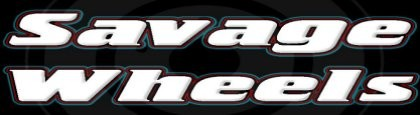
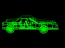
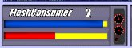
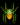
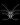
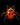
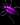
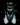

|
 |  |
- За играта
- Системни изисквания
- Управление и съвети
- Проблеми
- Връзка и Поддръжка
За играта
Хей, благодарим ви, че изтеглихте Savage Wheels.
Savage Wheels (Свирепи Колела) е игра, в която трябва да оцелеете в смъротносен авто-турнир.Целта е да елиминирате съперниците си, като победител е този който унищожи най-много противници.Играчите могат да събират различни бонуси като: учвеличение на скоростта, щетата и др.Може да се избира измежду няколко автомобила, като всеки притежава уникални характерстики: скорост, ускорение, броня, щета и дори...шофьор ;-] Всеки шофьор си има собствена история, която може да научите в изиграването на кампанийте.Геймплейът включва: кампeйн, hotseat режим, където двама души могат да играят един срещу друг или срещу управлявани от компютъра опоненти, както и меле-режим, където принципа е 'всеки за себе си'!
Системни изисквания
Savage Wheels се нуждае минимум от:
Windows 95/98SE/ME/2000/XP
200 MHz Pentium или по-добър
32 mb Ram памет
35 mb място на диска
Видео карта способна (по възможност ;-) на 640x480x16bit
Sound Card
Keyboard
2-Button Mouse
Управление и съвети
Състезател 1 - клавиши:
стрелките за управление UP (ускорение напред) LEFT (завой наляво) RIGHT (завой надясно) DOWN (ускорение назад) RIGHT CTRL - поставяне на мина DELETE - самоунищожениеСъстезател 2 - клавиши:
R (ускорение напред) D (завой наляво) G (завой надясно) F (ускорение назад) LEFT CTRL - поставяне на мина TAB - самоунищожение
Можете да сменяте терена чрез F5.
По време на игра можете да включвате/изключвате музиката чрез F4.
За да включите/изключите сенките използвайте F9.
 Синята линия е бронята(живот) индикатора на вашия автомобил. Ако падне под половината от големината си
автомобила ви ще изглежда смачкан.
Червената линия е инидикатор на гнева ви. Колкото повече гняв набирате, толкова повече щета ще нанася автомобила ви.
Белите числа са вашите победи(frags).
Някои съвети и факти: - Ако се самоунищожите, ще загубите победа(frag).
- Ако дълго време не се движите автомобилът ви ще бъде унищожен в рамките на 5-7 секунди.
- Автоматичните унищожения (от неактивност на автомобила) не вземат победи.
- Мините могат да са доста полезни ако ви гони противник.
- Няма да претърпите щета ако преминете върху ваша мина.
- За да нанесете пълна щета блъскайте противниците си с максимална скорост.
- Ако блъснете противник с ниска скорост, няма да използвате пълния си гняв.
Когато прегазите насекомо, получавате специфичен бонус.Добър съвет е винаги
да се стремите да мачкате насекоми които дават победа или гняв.
По-долу е дадена таблица на насекомите и бонусите които дават.
 +1 победа  Дава гняв
 Малка поправка на автомобила
 Увеличава скоростта на автомобила  +3 мини
Проблеми
Ако екрана премигва или играта върви твърде бавно, опитайте да я пуснете с параметър -hw.Ето как да направите това:
Първо щракнете с десния бутон на мишката върху файла sw.exe и изберете Create Shortcut.
След това щракнете с десния бутон върху Shortcut-та и изберете Properties.В полето Target,
след пътя, оставете място и добавете -hw след това натиснете Apply или OK.
Пуснете играта от създадения Shortcut.
Връзка и Поддръжка
Savage Wheels официална страница: щракни тук KenamicK Entertainment: www.kenamick.com Моля, уведомявайте ни за евентуални
бъгове и грешки наsupport@kenamick.com
Savage Wheels is powered by:
Simple DirectMedia Layer
and FMOD
2003-2010 © KenamicK Entertainment
(Този документ е стар. Моля използвайте английската версия.)